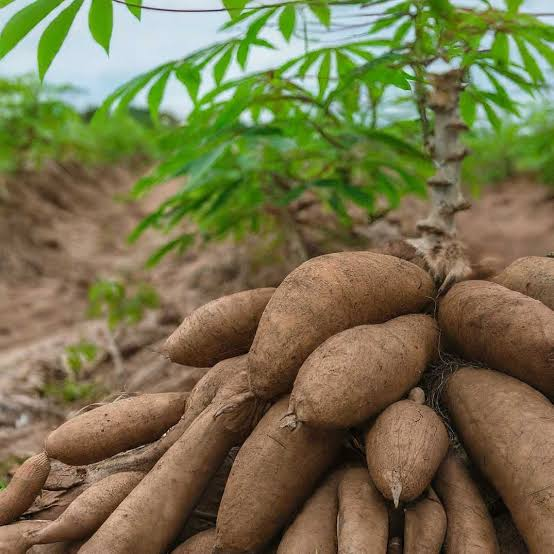
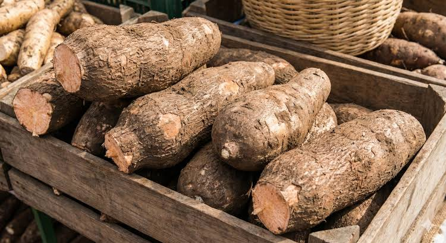
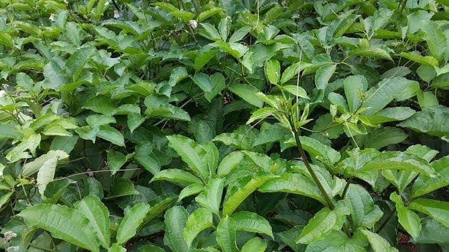

Featured Crops
The crops that drive Ebonyi State's agricultural economy.

Rice
Abakaliki rice is known nationwide for its quality and clean, stone-free milling.

Cassava
A staple root crop processed into garri, fufu and starch for local and export markets.

Yam
Grown across Ezza and Ikwo, yam remains a high-value crop for household and market sales.

Vegetables
Ugu, okra, pepper and tomatoes harvested fresh for nearby town markets.